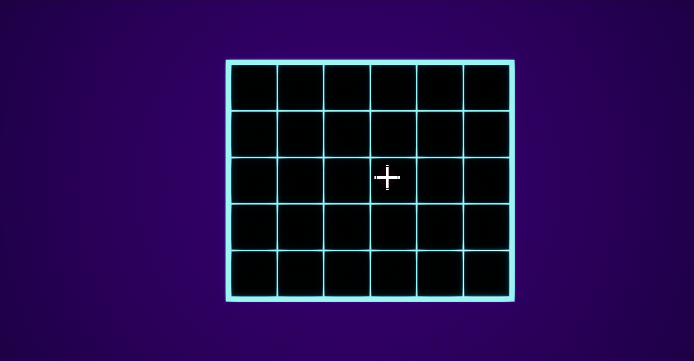

Manual
Mineの基本操作をステップバイステップで解説します。
ゲームの目的
地雷が埋まっていないすべてのマスを開くことが目標です。
地雷のあるマスを誤って開いてしまうとゲームオーバーになります。
すべての地雷に旗を立て、残りのマスをすべて開くとクリアです！
1. ゲームを開始する

ゲームを起動すると、難易度選択画面が表示されます。
- 初めての方は5x6マスから始めることをお勧めします。
- 難易度を選んで[START]クリックするとゲームが開始します。
2. 最初のマスを開く

マインスイーパーの第一歩は、最初のマスを開くこと
- 左クリックでマスを開きます
- 最初にクリックしたマスは必ず安全です（地雷は配置されません）
- 数字が表示されたら、それは周囲8マスにある地雷の数を示しています
3. 地雷の位置を推測する
3D空間を移動しよう
- W/A/S/Dキー - キャラの移動
- マウス移動 - カメラを回転
- Spaceキー - ホバリング
- マウス右クリック - 旗を立てる
- ESCキー - ゲームメニューを開く
4. ブロックをたたく
爆弾が入っていないブロックを壊そう
- マウス左クリック - ブロックの破壊